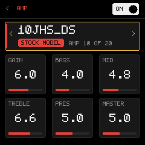
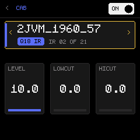
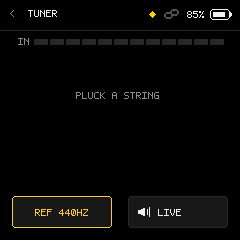
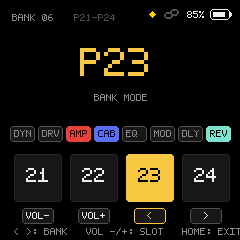

CUSTOM FIRMWARE · EARLY ACCESS
Onyx: new firmware for your amp modeler.
Open-source firmware for the M-VAVE / Donner amp modeler, with a rebuilt on-device interface, a full 8-block signal chain, an EQ editor, tuner and groove tools. Install it, back up your unit and go back to stock, all from your browser.
Install Onyx ↓ Open the Web Editor
What you get





Install from browser
This browser can't do it. Web MIDI with SysEx is needed: use desktop Chrome or Edge.
Back up first, keep USB connected. Installing rewrites the unit's app area. Close any program holding the unit's MIDI port.
Status: Not connected
- ConnectPlug the amp in over USB and allow the MIDI prompt.
- BackupReads the unit's critical regions twice and saves a file to your downloads.
- WriteInstalls Onyx 1.19 straight from this site.
- ConfirmReconnect (power-cycle the unit if it stays dark), then compare the unit's flash with the release byte for byte.
Connection details
No activity yet.
Download backup Restore original, tone editor, more Download .fwsc Download .bin
SHA-256 values: SHA256SUMS. Release 1.19, USB-only, radio disabled. If the unit stays dark after "The unit restarts...", power-cycle it (unplug USB, plug it back in), then run step 4.
Before you plug in
- Desktop Chrome or Edge only (Web MIDI with SysEx).
- The unit should be on a charged battery.
- Return to the original firmware any time with Restore Factory Firmware in the Web Editor and your backup or the official vendor
.fwsc. - If a unit won't boot, the ROM download mode can't be disabled by bad firmware. See the recovery guide.